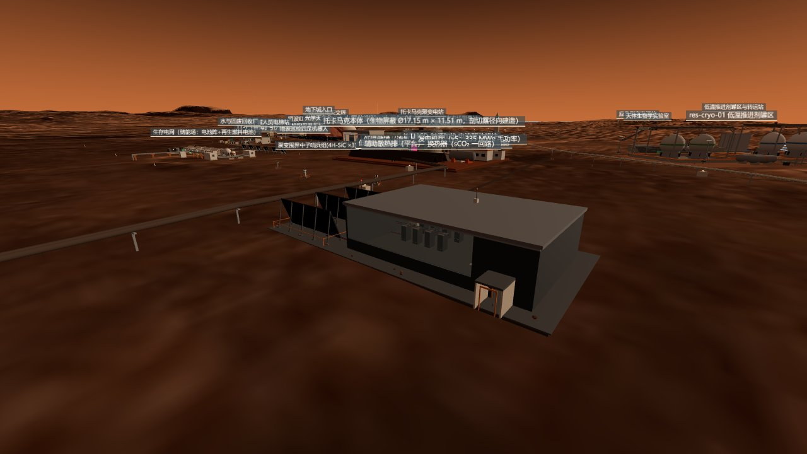
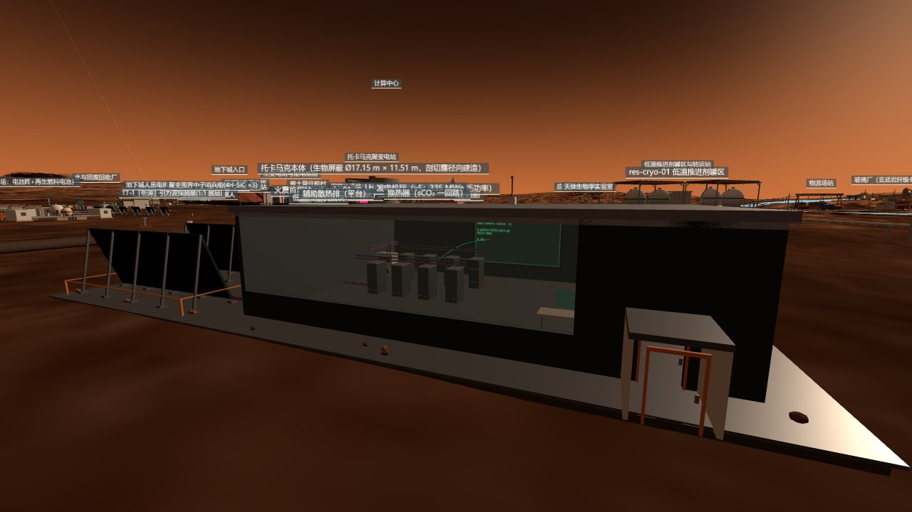

What it is
A datacenter hall whose hero screen runs an AI — the AI's silicon body is designed one rack over — and every wall, panel and pipe now has a number behind it.
The big screen types Mars text character by character. In v0 it ran a bigram of the same class as the chip's,
counted live in the browser with Math.random(). That sentence on the old card — "the same algorithm as the wall
display" — did not survive this round's audit, so the screen was changed rather than the card: it now imports the chip's
own CDF table (mb1-cdf-data.js, generated from build/mb1_cdf.mem), runs the chip's arithmetic, and
prints MB-1 bit-exact vs python golden: PASS in its boot log. If that line ever reads FAIL it is red.
The table is trained on the city's own seven Mars sentences, which are now also MB-1's training corpus.
MB-1 is that algorithm as a digital ASIC design: RTL, two simulators in lock-step, Vivado synthesis, an Arty bitstream, a Yosys sky130 netlist and an OpenROAD place-and-route to a 1.79 mm² GDS. The evaluation board on the rack-2 tray is drawn from the board's real layout (467 routed segments) — a design with Gerber files, 57 clearance violations still open, never ordered. The package in the socket is a prop. The earlier page header called the board "fabbed"; that word is retired.
The rest of the building is what changed most. The fin wall of v0 was a drawing; the radiator field is now sized by a heat account with two independent view-factor methods and an ISS known-answer gate. The eight racks are booked by the grid dossier at 40/55 kW — a capacity read off the drawing, which the load account could not match to any card-priced load. The radiation account is declared not closable until sci-rad-01 hands over the surface spectrum. Every one of those statements has a script, a JSON product and a pre-registered expectation behind it.

